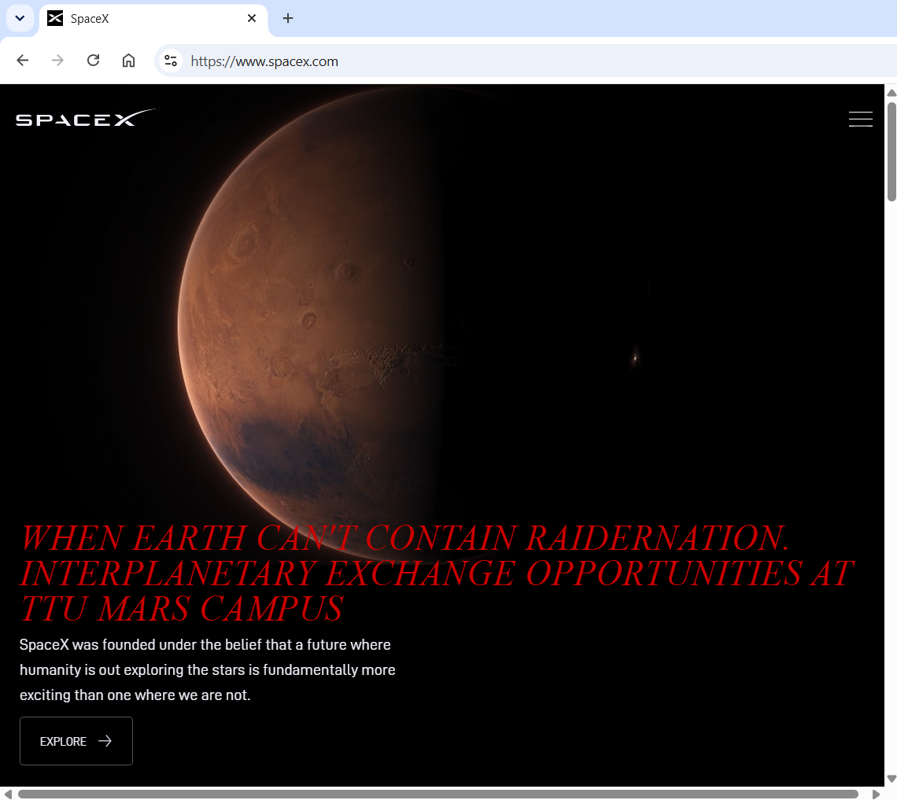

My Dev Tools Vandalism
I used browser developer tools to temporarily "vandalize" a website. Below is a screenshot showing my changes. These edits only appeared on my computer and did not affect the actual website.

What I "Vandalized"
Describe the changes you made to the website using the browser's developer tools. Some potential questions to consider:
- What text did you edit? I changed "Making Life Multiplantery" to " When Earth can't contain Raidernation. Interplanetary Exchange opportunities at TTU Mars Campus"
- What CSS properties did you modify? I changed H2 color from variable white to Raider Red #CC0000, I also changed the font-family to Charter and italicized it.
- What made your edits interesting or amusing? I feel amused by the absurdity of a TTU Mars Campus.
- Did you understand why some changes worked and some didn't? Some of the websites I tried first were harder to change as they used lots of images unstead of text. This make it harder to make changes without inputing new images in their place.
- Why did you choose the changes you did? I wanted to use the Texas Tech University branding schemes to help set the changes apart from the original.
- Were you able to understand how the HTML and CSS worked together to make the changes you made? Yes, HTML changes the information and css changes the formating to make it look better.
- Do you think you have a better sense of how dev tools can be used while crafting your own webpages? When stuck building your own websites you can look at fully developed websites to help get ideas of what works and what doesn't work.